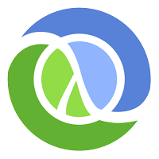
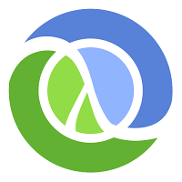

We Will
企业软件市场的客户群体
中国的企业软件市场，如果根据客户群体来分，大约可以分成4个部分：
- 外资跨国企业客户
- 民营企业客户
- 国资企业客户
- 政府机构及组织客户
企业规模两极化
企业规模两极化的观点来自于丛龙峰博士，他认为未来的企业将呈现大象和跳蚤共舞的局面。如跳蚤般的小微企业海量存在，他们凭借着灵活的身形和贴近客户的优势，在市场中获利。其中少数的成功者，迅速成为巨头，网罗同业和上下游，成为内部自组织化的大象企业。而长期存在于旧时代的中等规模企业，由于即不具有跳蚤的灵活性，又缺乏大象的集约优势，只能是大象成长史中的短暂形态。中型企业的成功者成为大象，失败者或成为跳蚤或被大象吸纳。
针对中小企业的 SaaS 服务为什么一直做不起来？
- 客户购买软件后，其实不会去更改自己的业务流程以符合一个标准化的软件。也就是说一个标准化的软件能够为客户提供的商业价值有限。
- 在一份SaaS订单中，实施的成分越大，客户的粘度也就越高。免费、或者是低收费的产品，意味着客户转换成本低，粘度也低。
- 简单、高价值、高利润的标准化SaaS产品是不存在的，因为一旦出现这样的产品，竞品就会蜂拥而来！
- 就第三年以后的软件拥有总成本来看，还是On-Premise模式较低。其中的原因之一是因为会计原则将On-Premise软件视为固定资产，可折旧摊提。
-
随着企业流程与整合度的复杂性增加，部署SaaS与On-Premise软件所需的时间差异会越来越小。
-
SaaS应用程序在Metadata层级是高度客制化的，可透过应用程序平台服务(APaas)方式来实现，业界也有许多实际建置的范例。不过，对于复杂、端到端企业流程的管理功能来说，SaaS还是有其限制。
综合以上，我偏向于认为聚焦于大客户或者是提高收费，采用saas+pass的模式更能满足客户需求，更能实现稳健、不大规模烧钱的成长，但这样的模式对团队、技术、资源基础等要求是很高的。 作者：刘运涛 来源：知乎
当前的系统定位
目前的系统服务于企业的“用户服务领域”以及“公众营销领域”，他是介于企业应用和公众应用之间的应用;
- Event-Driven aka asynchronous
- NIO (Non-Blocking I/O) based
- Light-weight
- Reactive (See Reactor Pattern - http://en.wikipedia.org/wiki/Reactor_pattern)
- Distributed
- Scalable
- Resilient
- Node like but, not a clone :)
- Isomorphic
- Polygot!
- Extensible...
What do you speak?


 

Verticles
The smallest unit of code that runs inside a Vert.x instance. Strictly single-threaded.
Many of them can be executed concurrently in different nodes/instances.
Composable units forming pipeline or network of code execution.
Written in a supported programming language of your choice...
var vertx = require('vertx');
vertx.createHttpServer().requestHandler(function(req) {
req.response.end("Hi there STLJS!");
}).listen(8080, 'localhost');
Modules
Functional encapsulation of verticles.
Typical Vert.x application is composed of one more more modules.
Uses mod.json as module descriptor
Module registry is available at - http://modulereg.vertx.io/
vertx install io.vertx~mod-redis-client~1.1.4
Worker Verticles
Verticles where you can run blocking calls. Remember JDBC ?
Multi-threaded, where you can perform computationally intensive/blocking operations.
Be careful using this, it won't scale!
Async huh?
- JavaScript developers are comfortable with asynchrous style programming due to DOM event handlers, callbacks etc.
- Java & other languages are catching up on this style
- No more single thread for every single request
- Obviously, its easier said than done.
- So, seek help from promise libraries & modules like mod-rx-vertx which uses RxJava library (inspired by .Net's Reactive extensions)
Vert.x instances
- Where the verticles are run...
- A single instance runs inside its own JVM instance
- Instances are clustered within the same host or on different hosts across the network forming a distributed event bus
- Guaranteed that a single instance will not be executed by more than one thread concurrently
Distributed Event Bus
- Nervous system of Vert.x!
- Verticles communicate with each other over the distributed event bus.
- Messaging Models
- Point-to-Point
- Request/Response
- Publish/Subscribe
- Layer transparent!
- Also available at the browser.Think Firebase, Meteor!
- Demo will be coming shortly.
Message Types
- number
- string
- boolean
- JSON object
- Vert.x Buffer
Shared Data (Maps & Sets)
Data structure to share across verticles & modules.
Meant to be immutable!
var map = vertx.getMap('myMap');
map.put('myKey', 'myValue');
var set = vertx.getSet('mySet');
set.add('myValue');
Clusters
Out-of-box clustering support.
Pluggable clustering manager, default is based on Hazelcast
High Availability (HA) mode
Automatic failover support!
Faul tolerant eh...
When a module fails in one node, it will automatically start on another node on the cluster.
vertx -ha
Demo please...
APIs
- vertx
- vertx/container
- vertx/buffer
- vertx/console
- vertx/datagram
- vertx/dns
- vertx/event_bus
- vertx/file_system
- vertx/http
- vertx/net
- vertx/shared_data
- vertx/sockjs
- vertx/timer
- etc.
Container APIs
- Used for dynamically deploying & un-deploying verticles and modules
/*Deploy 4 instance of verticle.js*/
container.deployVerticle("verticle.js", 4);
Serve what?
- HTTP/HTTPS client & server
- HTTP methods (GET, PUT, POST etc.)
- Supports HTTP chunked transfer encoding
- Multipart
- WebSockets
- SockJS server
- etc.
Demo
Distributed Event Bus
References
- http://www.infoq.com/presentations/performance-reactive-vertx/
- http://vertx.io/manual.html
- http://vertx.io/core_manual_js.html
- https://github.com/vert-x
- https://github.com/vert-x